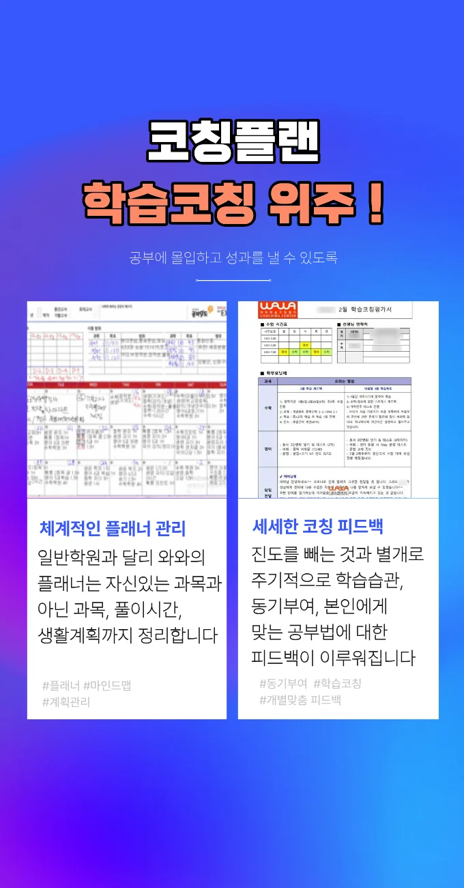

대화동 와와코칭학원
대화동 와와코칭학원
한 학생이 기초 개념을 점검하지 않은 채 응용 문제로 넘어가면 곧바로 난이도를 낮추고 본질로 되돌리는 방식으로 학습 궤도를 보정하며, 이는 단기 성과가 아닌 장기적 역량 형성에 초점을 둔 전략이다. 대화동 와와코칭학원은 이러한 통합적 접근은 단편적 지식을 넘어서 전체를 아우르는 학습 설계로, 학생이 자신의 머릿속에 맞춤형 학습 지도를 그려나가게 만듭니다. 대화동 와와코칭학원은 목표 달성을 위한 동기 부여 루틴도 개발했는데, 작고 구체적인 목표예: ‘오늘 오답 5개 정리하기’를 이룰 때마다 스티커를 붙이고, 한 달 누적 목표 달성 시 작게 선물을 주는 방식으로 자기보상을 했다. 문장 내 순서를 매번 바꿔보는 역동 구조 훈련은 언어적 유연성을 높이며, ‘A는 B이다’를 ‘B인 것이 A다’, ‘바로 A가 B다’ 등 다양한 형태로 표현해보는 연습은 국어와 영어 모두에 유익하다. 동시에 시험 범위 전체를 담은 정리표를 벽에 붙이고, 매일 진도가 끝날 때마다 완료한 영역을 색으로 칠해 진행 상황을 직관적으로 인지할 수 있게 만든다. 이를 통해 학습자는 자신의 학습 내용을 실제 상황에 적용하는 능력을 키울 수 있습니다. 전문가들은 학생이 스스로 설명하고, 오류를 분석하며, 다양한 시제와 논술 구조를 활용하는 과정을 통해 학습 내용이 단순히 머릿속에 남는 것이 아니라 실제 상황에 적용 가능한 실전 능력으로 전이된다고 강조한다.